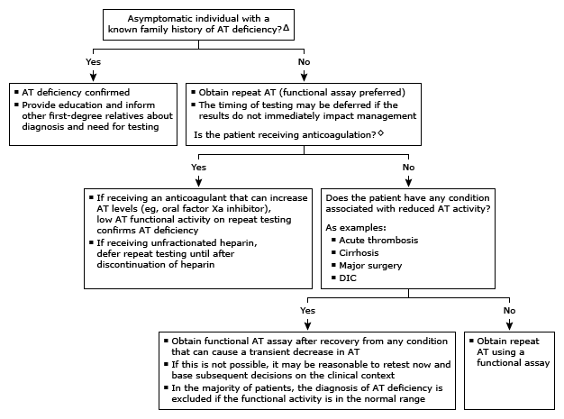

Initial evaluation of low antithrombin in adults*¶

This algorithm is intended for use with additional UpToDate content on antithrombin deficiency.
AT: antithrombin; DIC: disseminated intravascular coagulation. * Most laboratories report a normal AT functional activity of approximately 80 to 120%. The mean concentration of AT antigen in normal plasma is approximately 140 mcg/mL. Interpretation of a specific abnormal test result should be based upon the reference range reported by the laboratory. ¶ Obtain hematology consultation to assist in interpretation of abnormal test results and to guide further evaluation. Δ Hereditary AT deficiency is rare. Patients with hereditary AT deficiency due to heterozygosity for a SERPINC1 mutation typically have AT activity levels in the range of 40 to 60%. ◊ Unfractionated heparin administered at therapeutic doses for several days can reduce AT activity, whereas direct oral factor Xa inhibitors (ie, apixaban, edoxaban, rivaroxaban) can lead to falsely elevated AT activity levels.